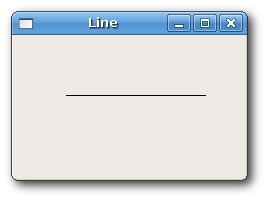
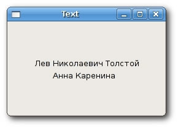
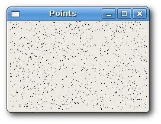
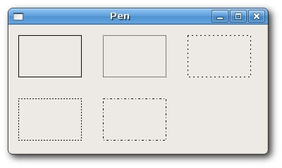
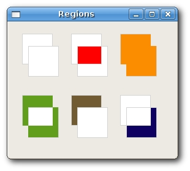
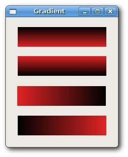
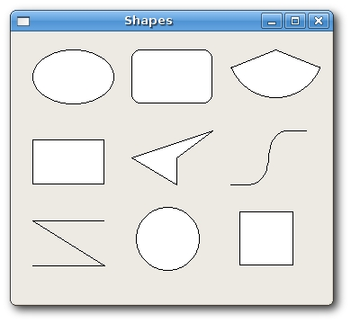

Device Contexts
The GDI (Graphics Device Interface) is an interface for working with graphics. It is used to interact with graphic devices such as monitor, printer or a file. The GDI allows programmers to display data on a screen or printer without having to be concerned about the details of a particular device. The GDI insulates the programmer from the hardware.

From the programmer's point of view, the GDI is a group of classes and methods for working with graphics. The GDI consists of 2D Vector Graphics, Fonts and Images.
To begin drawing graphics, we must create a device context (DC) object. In wxWidgets the device context is called wxDC. The documentation defines wxDC as a device context onto which which graphics and text can be drawn. It represents number of devices in a generic way. Same piece of code can write to different kinds of devices. Be it a screen or a printer. The wxDC is not intended to be used directly. Instead a programmer should choose one of the derived classes. Each derived class is intended to be used under specific conditions.
Derived wxDC classes
- wxBufferedDC
- wxBufferedPaintDC
- wxPostScriptDC
- wxMemoryDC
- wxPrinterDC
- wxScreenDC
- wxClientDC
- wxPaintDC
- wxWindowDC
The wxScreenDC is used to draw anywhere on the screen. The wxWindowDC is used if we want to paint on the whole window (Windows only). This includes window decorations. The wxClientDC is used to draw on the client area of a window. The client area is the area of a window without it's decorations (title and border). The wxPaintDC is used to draw on the client area as well. But there is one difference between the wxPaintDC and the wxClientDC. The wxPaintDC should be used only from a wxPaintEvent. The wxClientDC shoud not be used from a wxPaintEvent. The wxMemoryDC is used to draw graphics on the bitmap. The wxPostScriptDC is used to write to PostScript files on any platform. The wxPrinterDC is used to access a printer (Windows only).
Simple line
We begin with drawing a line.
line.h#include <wx/wx.h> class Line : public wxFrame { public: Line(const wxString& title); void OnPaint(wxPaintEvent& event); };
line.cpp#include "line.h" Line::Line(const wxString& title) : wxFrame(NULL, wxID_ANY, title, wxDefaultPosition, wxSize(280, 180)) { this->Connect(wxEVT_PAINT, wxPaintEventHandler(Line::OnPaint)); this->Centre(); } void Line::OnPaint(wxPaintEvent& event) { wxPaintDC dc(this); wxCoord x1 = 50, y1 = 60; wxCoord x2 = 190, y2 = 60; dc.DrawLine(x1, y1, x2, y2); }
main.h#include <wx/wx.h> class MyApp : public wxApp { public: virtual bool OnInit(); };
main.cpp#include "main.h" #include "line.h" IMPLEMENT_APP(MyApp) bool MyApp::OnInit() { Line *line = new Line(wxT("Line")); line->Show(true); return true; }
In our example, we draw a simple line onto the client area of the window. If we resize the window, it is redrawn. An wxPaintEvent is generated. And the line is drawn again.
void OnPaint(wxPaintEvent& event);
Here we declare a OnPaint() event handler function.
this->Connect(wxEVT_PAINT, wxPaintEventHandler(Line::OnPaint));
We connect a paint event to the OnPaint() method. All the drawing happens inside the OnPaint() event handler.
wxPaintDC dc(this);
We define a wxPaintDC device context. It is a device context, that is used to draw on the window inside the wxPaintEvent
wxCoord x1 = 50, y1 = 60; wxCoord x2 = 190, y2 = 60;
We define four coordinates.
dc.DrawLine(x1, y1, x2, y2);
We draw a simple line calling the DrawLine() method.

Drawing text
Drawing some text on the window is easy.
text.h#include <wx/wx.h> class Text : public wxFrame { public: Text(const wxString & title); void OnPaint(wxPaintEvent & event); };
text.cpp#include "text.h" Text::Text(const wxString& title) : wxFrame(NULL, wxID_ANY, title, wxDefaultPosition, wxSize(250, 150)) { Connect(wxEVT_PAINT, wxPaintEventHandler(Text::OnPaint)); Centre(); } void Text::OnPaint(wxPaintEvent& event) { wxPaintDC dc(this); dc.DrawText(wxT("Лев Николaевич Толстoй"), 40, 60); dc.DrawText(wxT("Анна Каренина"), 70, 80); }
main.h#include <wx/wx.h> class MyApp : public wxApp { public: virtual bool OnInit(); };
main.cpp#include "main.h" #include "text.h" IMPLEMENT_APP(MyApp) bool MyApp::OnInit() { Text *text = new Text(wxT("Text")); text->Show(true); return true; }
In our example, we draw text Lev Nikolayevich Tolstoy, Anna Karenina in russian azbuka onto the window.
dc.DrawText(wxT("Лев Николaевич Толстoй"), 40, 60);
dc.DrawText(wxT("Анна Каренина"), 70, 80);
The DrawText() method draws text on the window. It Draws a text string at the specified point, using the current text font, and the current text foreground and background colours. Thanks to the wxT() macro, we can use azbuka directly in the code. The wxT() macro is identical to _T() macro. It wraps string literals for use with or without Unicode. When Unicode is not enabled, wxT() is an empty macro. When Unicode is enabled, it adds the necessary L for the string literal to become a wide character string constant.

Point
The simplest geometrical object is a point. It is a plain dot on the window.
DrawPoint(int x, int y)
This method draws a point at x, y coordinates.
points.cpp#include <wx/wx.h> class Points : public wxFrame { public: Points(const wxString & title); void OnPaint(wxPaintEvent & event); };
points.cpp#include "points.h" #include <stdlib.h> #include <time.h> Points::Points(const wxString& title) : wxFrame(NULL, wxID_ANY, title, wxDefaultPosition, wxSize(280, 180)) { this->Connect(wxEVT_PAINT, wxPaintEventHandler(Points::OnPaint)); srand(time(NULL)); this->Centre(); } void Points::OnPaint(wxPaintEvent & event) { wxPaintDC dc(this); wxCoord x = 0; wxCoord y = 0; wxSize size = this->GetSize(); for (int i = 0; i<1000; i++) { x = rand() % size.x + 1; y = rand() % size.y + 1; dc.DrawPoint(x, y); } }
main.h#include <wx/wx.h> class MyApp : public wxApp { public: virtual bool OnInit(); };
main.cpp#include "main.h" #include "points.h" IMPLEMENT_APP(MyApp) bool MyApp::OnInit() { Points *points = new Points(wxT("Points")); points->Show(true); return true; }
A single point might be difficult to see. So we create 1000 points. Each time the window is resized, we draw the 1000 points over the client area of the window.
wxSize size = this->GetSize();
Here we get the size of the window.
x = rand() % size.x + 1;
Here we get a random number in the range of 1 to size.x.

Pen
Pen is an elementary graphics object. It is used to draw lines, curves and outlines of rectangles, ellipses, polygons or other shapes.
wxPen(const wxColour& colour, int width = 1, int style = wxSOLID)
The wxPen constructor has three parameters. Colour, width and style. Follows a list of possible pen styles. Pen styles
- wxSOLID
- wxDOT
- wxLONG_DASH
- wxSHORT_DASH
- wxDOT_DASH
- wxTRANSPARENT
pen.h#include <wx/wx.h> class Pen : public wxFrame { public: Pen(const wxString& title); void OnPaint(wxPaintEvent& event); };
pen.cpp#include "pen.h" Pen::Pen(const wxString& title) : wxFrame(NULL, wxID_ANY, title, wxDefaultPosition, wxSize(360, 180)) { this->Connect(wxEVT_PAINT, wxPaintEventHandler(Pen::OnPaint)); this->Centre(); } void Pen::OnPaint(wxPaintEvent& event) { wxPaintDC dc(this); wxColour col1, col2; col1.Set(wxT("#0c0c0c")); col2.Set(wxT("#000000")); wxBrush brush(wxColour(255, 255, 255), wxTRANSPARENT); dc.SetBrush(brush); dc.SetPen(wxPen(col1, 1, wxSOLID)); dc.DrawRectangle(10, 15, 90, 60); dc.SetPen(wxPen(col1, 1, wxDOT)); dc.DrawRectangle(130, 15, 90, 60); dc.SetPen(wxPen(col1, 1, wxLONG_DASH)); dc.DrawRectangle(250, 15, 90, 60); dc.SetPen(wxPen(col1, 1, wxSHORT_DASH)); dc.DrawRectangle(10, 105, 90, 60); dc.SetPen(wxPen(col1, 1, wxDOT_DASH)); dc.DrawRectangle(130, 105, 90, 60); dc.SetPen(wxPen(col1, 1, wxTRANSPARENT)); dc.DrawRectangle(250, 105, 90, 60); }
main.h#include <wx/wx.h> class MyApp : public wxApp { public: virtual bool OnInit(); };
main.cpp#include "main.h" #include "pen.h" IMPLEMENT_APP(MyApp) bool MyApp::OnInit() { Pen *pen = new Pen(wxT("Pen")); pen->Show(true); return true; }
In our example, we draw 6 rectangles with different pen styles. The last one is transparent, not visible.
dc.SetPen(wxPen(col1, 1, wxSOLID)); dc.DrawRectangle(10, 15, 90, 60);
Here we define a pen for our first rectangle. We set a pen with color col1 (#0c0c0c), 1 pixel wide, solid. The DrawRectangle() method draws the rectangle.

Regions
Regions can be combined to create more complex shapes. We can use four set operations. Union, Intersect, Substract and Xor. The following example shows all four operations in action.
Regions.h#include <wx/wx.h> class Regions : public wxFrame { public: Regions(const wxString & title); void OnPaint(wxPaintEvent & event); };
Regions.cpp#include "Regions.h" Regions::Regions(const wxString& title) : wxFrame(NULL, wxID_ANY, title, wxDefaultPosition, wxSize(270, 220)) { this->Connect(wxEVT_PAINT, wxPaintEventHandler(Regions::OnPaint)); this->Centre(); } void Regions::OnPaint(wxPaintEvent & event) { wxPaintDC dc(this); wxColour gray, white, red, blue; wxColour orange, green, brown; gray.Set(wxT("#d4d4d4")); white.Set(wxT("#ffffff")); red.Set(wxT("#ff0000")); orange.Set(wxT("#fa8e00")); green.Set(wxT("#619e1b")); brown.Set(wxT("#715b33")); blue.Set(wxT("#0d0060")); dc.SetPen(wxPen(gray)); dc.DrawRectangle(20, 20, 50, 50); dc.DrawRectangle(30, 40, 50, 50); dc.SetBrush(wxBrush(white)); dc.DrawRectangle(100, 20, 50, 50); dc.DrawRectangle(110, 40, 50, 50); wxRegion region1(100, 20, 50, 50); wxRegion region2(110, 40, 50, 50); region1.Intersect(region2); wxRect rect1 = region1.GetBox(); dc.SetClippingRegion(region1); dc.SetBrush(wxBrush(red)); dc.DrawRectangle(rect1); dc.DestroyClippingRegion(); dc.SetBrush(wxBrush(white)); dc.DrawRectangle(180, 20, 50, 50); dc.DrawRectangle(190, 40, 50, 50); wxRegion region3(180, 20, 50, 50); wxRegion region4(190, 40, 50, 50); region3.Union(region4); dc.SetClippingRegion(region3); wxRect rect2 = region3.GetBox(); dc.SetBrush(wxBrush(orange)); dc.DrawRectangle(rect2); dc.DestroyClippingRegion(); dc.SetBrush(wxBrush(white)); dc.DrawRectangle(20, 120, 50, 50); dc.DrawRectangle(30, 140, 50, 50); wxRegion region5(20, 120, 50, 50); wxRegion region6(30, 140, 50, 50); region5.Xor(region6); wxRect rect3 = region5.GetBox(); dc.SetClippingRegion(region5); dc.SetBrush(wxBrush(green)); dc.DrawRectangle(rect3); dc.DestroyClippingRegion(); dc.SetBrush(wxBrush(white)); dc.DrawRectangle(100, 120, 50, 50); dc.DrawRectangle(110, 140, 50, 50); wxRegion region7(100, 120, 50, 50); wxRegion region8(110, 140, 50, 50); region7.Subtract(region8); wxRect rect4 = region7.GetBox(); dc.SetClippingRegion(region7); dc.SetBrush(wxBrush(brown)); dc.DrawRectangle(rect4); dc.DestroyClippingRegion(); dc.SetBrush(white); dc.DrawRectangle(180, 120, 50, 50); dc.DrawRectangle(190, 140, 50, 50); wxRegion region9(180, 120, 50, 50); wxRegion region10(190, 140, 50, 50); region10.Subtract(region9); wxRect rect5 = region10.GetBox(); dc.SetClippingRegion(region10); dc.SetBrush(wxBrush(blue)); dc.DrawRectangle(rect5); dc.DestroyClippingRegion(); }
main.h#include <wx/wx.h> class MyApp : public wxApp { public: virtual bool OnInit(); };
main.cpp#include "main.h" #include "Regions.h" IMPLEMENT_APP(MyApp) bool MyApp::OnInit() { Regions *regions = new Regions(wxT("Regions")); regions->Show(true); return true; }

Gradient
In computer graphics, gradient is a smooth blending of shades from light to dark or from one color to another. In 2D drawing programs and paint programs, gradients are used to create colorful backgrounds and special effects as well as to simulate lights and shadows. (answers.com)
void GradientFillLinear(const wxRect& rect, const wxColour& initialColour,
const wxColour& destColour, wxDirection nDirection = wxEAST)
This method fills the area specified by a rect with a linear gradient, starting from initialColour and eventually fading to destColour. The nDirection parameter specifies the direction of the colour change, the default value is wxEAST.
gradient.h#include <wx/wx.h> class Gradient : public wxFrame { public: Gradient(const wxString& title); void OnPaint(wxPaintEvent& event); };
gradient.cpp#include "gradient.h" Gradient::Gradient(const wxString& title) : wxFrame(NULL, wxID_ANY, title, wxDefaultPosition, wxSize(220, 260)) { this->Connect(wxEVT_PAINT, wxPaintEventHandler(Gradient::OnPaint)); this->Centre(); } void Gradient::OnPaint(wxPaintEvent& event) { wxPaintDC dc(this); wxColour col1, col2; col1.Set(wxT("#e12223")); col2.Set(wxT("#000000")); dc.GradientFillLinear(wxRect(20, 20, 180, 40), col1, col2, wxNORTH); dc.GradientFillLinear(wxRect(20, 80, 180, 40), col1, col2, wxSOUTH); dc.GradientFillLinear(wxRect(20, 140, 180, 40), col1, col2, wxEAST); dc.GradientFillLinear(wxRect(20, 200, 180, 40), col1, col2, wxWEST); }
main.h#include <wx/wx.h> class MyApp : public wxApp { public: virtual bool OnInit(); };
main.cpp#include "main.h" #include "gradient.h" IMPLEMENT_APP(MyApp) bool MyApp::OnInit() { Gradient *grad = new Gradient(wxT("Gradient")); grad->Show(true); return true; }

Shapes
Shapes are more sophisticated geometrical objects. We will draw various geometrical shapes in the following example.
shapes.h#include <wx/wx.h> class Shapes : public wxFrame { public: Shapes(const wxString & title); void OnPaint(wxPaintEvent & event); };
shapes.cpp#include "shapes.h" Shapes::Shapes(const wxString& title) : wxFrame(NULL, wxID_ANY, title, wxDefaultPosition, wxSize(350, 300)) { this->Connect(wxEVT_PAINT, wxPaintEventHandler(Shapes::OnPaint)); this->Centre(); } void Shapes::OnPaint(wxPaintEvent& event) { wxPaintDC dc(this); wxPoint lines[] = { wxPoint(20, 260), wxPoint(100, 260), wxPoint(20, 210), wxPoint(100, 210) }; wxPoint polygon[] = { wxPoint(130, 140), wxPoint(180, 170), wxPoint(180, 140), wxPoint(220, 110), wxPoint(140, 100) }; wxPoint splines[] = { wxPoint(240, 170), wxPoint(280, 170), wxPoint(285, 110), wxPoint(325, 110) }; dc.DrawEllipse(20, 20, 90, 60); dc.DrawRoundedRectangle(130, 20, 90, 60, 10); dc.DrawArc(240, 40, 340, 40, 290, 20); dc.DrawPolygon(4, polygon); dc.DrawRectangle(20, 120, 80, 50); dc.DrawSpline(4, splines); dc.DrawLines(4, lines); dc.DrawCircle(170, 230, 35); dc.DrawRectangle(250, 200, 60, 60); }
main.h#include <wx/wx.h> class MyApp : public wxApp { public: virtual bool OnInit(); };
main.cpp#include "main.h" #include "shapes.h" IMPLEMENT_APP(MyApp) bool MyApp::OnInit() { Shapes *shapes = new Shapes(wxT("Shapes")); shapes->Show(true); return true; }
